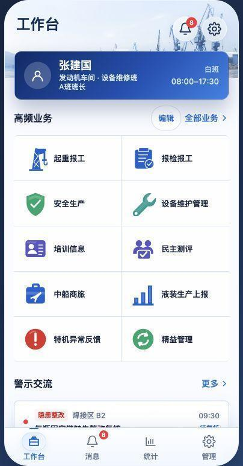
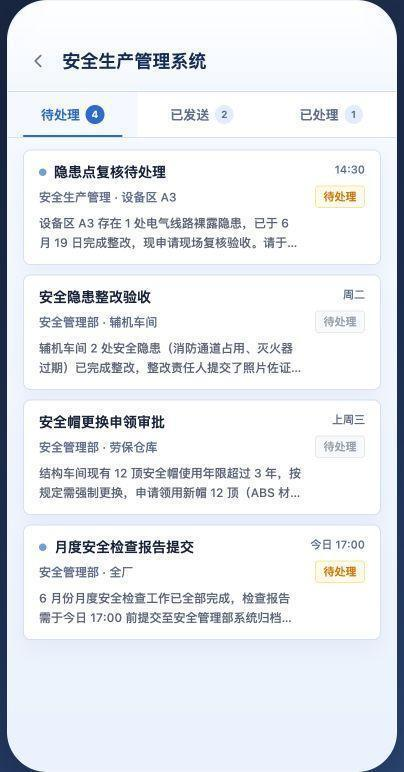
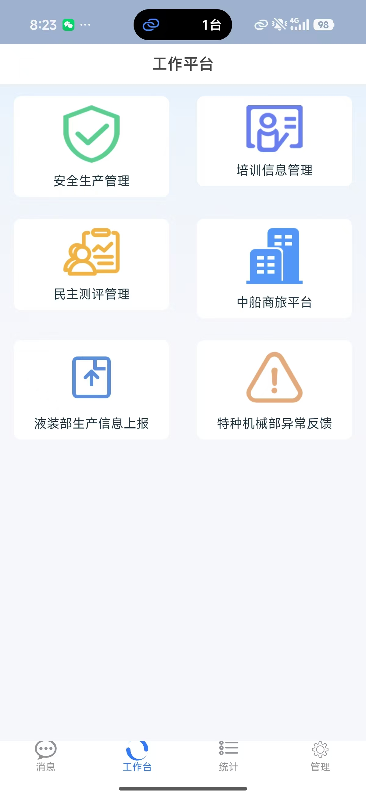
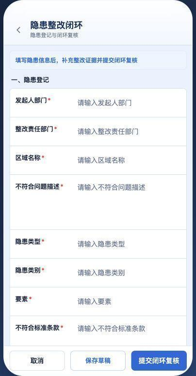

Page inventory
Organizing existing pages made the scope easier to understand before changing the structure.
Work / 01 — Main case study
Wuhan Marine Machinery — UX/UI redesign of an internal mobile management platform.


During my internship at Wuhan Marine Machinery, I worked on an internal mobile platform covering production, safety, equipment management, and training. My focus was on understanding its structure and improving how people could find and use its functions.
I organized the research in Notion and designed in Figma. ChatGPT and Codex helped with analysis, exploration, and prototype development; I reviewed their output and kept responsibility for the design decisions.
The platform brought many business functions into one app. Some entries were difficult to find, and navigation and task information needed a clearer structure.
My early instinct was to reduce the number of pages. Feedback from people at the company showed that most pages served real business needs. I shifted my attention to organization and access, rather than removing those functions.

I reviewed the existing app, company materials, and 62 page records to understand how the system was connected. The page inventory and system mapping helped me compare functions, navigation paths, and form requirements.
Organizing existing pages made the scope easier to understand before changing the structure.
Comparing paths helped me identify where business functions needed clearer grouping and access.
Checking screenshots against redesigned forms helped me retain important business information.
I explored navigation options, refined the Workbench, Messages, Statistics, and Management areas, and iterated on icons, layouts, and forms. An early five-navigation exploration was not the final delivered structure.
The redesign groups business entries on the Workbench, separates messages into processing states, and makes form requirements and recovery actions more explicit.

These are demonstration screens. Their data does not represent a live production system.
I submitted the page inventory, research documentation, interface designs, design assets, and an interactive front-end demonstration prototype to the company.
The redesign has not been tested with actual employees, and I have no confirmation of a production launch. I would next observe people using the main task flows and check where the design still creates uncertainty.
My main lesson was to understand why complexity exists before trying to simplify it. In this project, better organization mattered more than fewer pages.